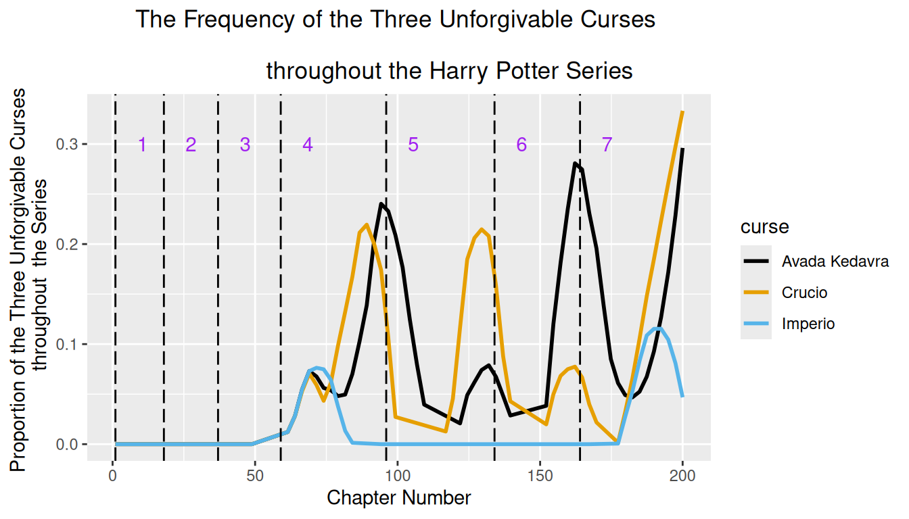
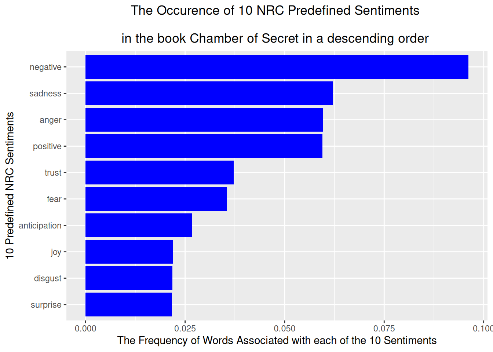
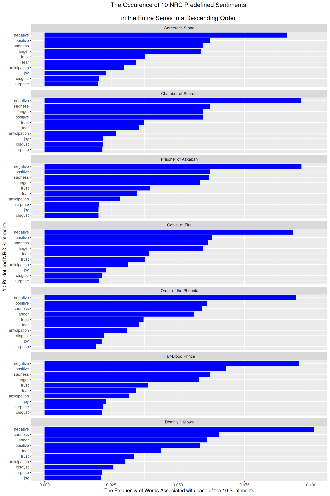
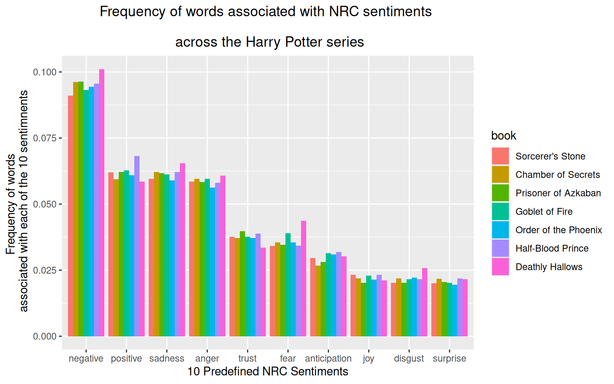

# load necessary libraries
library(tidyverse)
library(tidytext)
library(textdata)Is the Harry Potter series too negative for children?
Introduction:
Harry Potter, whether it be the book or the movie series, is a popular name among all generations. When referring to the series, it is more often that people talk about the creativity of J.K.Rowling’s writing and imagination, the fantasy tales of Wizardry and Witchcraft, the friendship, bravery, and courage it takes to fight against the dark side, and so on. It is a childhood for a lot of people; however, there are controversies regarding whether it is appropriate for children to watch and read this work due to its darkness and negativity. Given Rowling’s phenomenal writing, her depiction of everything is graphic and crafted to the smallest details, not excluding the evils and dark side of society. Thus, our goal is to study this controversy through text analysis, mainly drawing our insights from sentiment analysis, of the Harry Potter books.
We investigate the progression of emotions by observing the dominant characters that appear, together with tracking the occurrences of the three Unforgivable Curses (Avada Kedavra, Crucio, and Imperio) throughout the series. We also build on the sentiment analysis which uses 10 predefined NRC emotions to study the dominant emotions in each book, to find that the top four emotions are consistently negative, positive, sadness, and anger.
We first retrieved the datasets from the potter_files Professor Chakraborty created on GitHub, with credits to Paul Roback from St. Olaf College. There are four datasets in total, containing information on the locations where the scenes take place throughout the book, the characters’ names, the spells the characters use, and the original text of the 7 books in the Harry Potter series.
These 4 datasets combined help us make proper analysis of the text. Obviously, the text data is the main dataset, giving us line by line chronology and the ability to track language over the course of the series. Arguably, the second most important dataset is the potter_names. The names dataset helps us identify characters by first and last names, which is useful for siblings like George, Ron, etc. This is super important when we do tokenisation as it will allow us to properly identify characters and not mix any up.
potter_locations <- readr::read_csv("https://raw.githubusercontent.com/abhicc/potter_files/refs/heads/main/potter_locations.csv")
potter_names <- readr::read_csv("https://raw.githubusercontent.com/abhicc/potter_files/refs/heads/main/potter_names.csv")
potter_spells <- readr::read_csv("https://raw.githubusercontent.com/abhicc/potter_files/refs/heads/main/potter_spells.csv")
potter_texts <- readr::read_csv("https://raw.githubusercontent.com/abhicc/potter_files/refs/heads/main/potter_texts.csv")write_csv(potter_locations, "data/potter_locations.csv")
write_csv(potter_names, "data/potter_names.csv")
write_csv(potter_spells, "data/potter_spells.csv")
write_csv(potter_texts, "data/potter_texts.csv") We want to study how the emotions of the series evolve over time, specifically focusing on the negative progression of the book. One way to approach this is to follow the Unforgivable Curses: Avada Kedavra (killing), Crucio (torture), and Imperio (total control). These are the most powerful and strongest dark spells known to exist in the series, and are only used in intense fighting scenes against the enemy.
First, we start with regular expressions to learn where and how many times each of these spells are mentioned in the books. The returned locations are the lines, which correspond to the chapters, in which the spells are called. For Avada Kedavra and Crucio, we refer to them with zero or more space around the spell, taking into account times when they could be at the beginning or the end of the chapters. For Imperio, we select the actual curse by matching the entire word “imperio” instead of as a substring because there are occasions when the word “imperiously” is used in a sentence.
We see that the killing curse is called 23 times; torture is called 15 times; and control is called 6 times. They are all first spotted at line 72, and so a natural next step would be to visualize chronologically where these spells are cast. It would be more helpful to look at where in the book these spells occur rather than the line number.
# The lines/chapters in which Avada Kedavra appears in the book
potter_texts$text |>
str_which(" *avada kedavra *") #the lines/chapters in which this curse appears [1] 72 90 92 100 101 131 160 162 164 168 180 194 199#How many times Avada Kedavra appears in the book?
potter_texts$text |>
str_count(" *avada *") |>
sum(na.rm = TRUE) # this curse appears 21 times[1] 23#The lines/chapters in which Crucio appears in the book
potter_texts$text |>
str_which(" *crucio *") [1] 72 87 89 91 126 130 131 161 186 193 194 199#How many times Crucio appears in the book?
potter_texts$text |>
str_count(" *crucio *") |>
sum(na.rm = TRUE) [1] 15#The lines/chapters in which Imperio appears in the book
potter_texts$text |>
str_which("\\bimperio\\b") [1] 72 189 193#How many times Imperio appears in the book?
potter_texts$text |>
str_count("\\bimperio\\b") |> # since there is a word "imperiously"
sum(na.rm = TRUE) [1] 6We use regular expressions to identify where these 3 curses appears in the text, and then “unnest” or expand the binary results from FALSE or TRUE to 0 or 1. 1 means that the curse appears in that specific chapter. For a meaningful presentation of the result, like we mentioned earlier, we want to refer to where exactly in the book these appear rather than an abstract line number from the dataset. Thus, we also record where the first chapter of each book starts and section the line number accordingly.
unforgivable_curse <- tribble(
~curse, ~regexp,
"Avada Kedavra"," *avada kedavra *",
"Crucio", " *crucio *",
"Imperio", "\\bimperio\\b", )|>
mutate(speaks = purrr::map(regexp, str_detect, string = potter_texts$text))unforgivable_curse_unnest <- unforgivable_curse |>
unnest(cols = speaks) |>
mutate(
line = rep(1:length(potter_texts$text), 3),
speaks = as.numeric(speaks))
glimpse(unforgivable_curse_unnest)Rows: 600
Columns: 4
$ curse <chr> "Avada Kedavra", "Avada Kedavra", "Avada Kedavra", "Avada Kedav…
$ regexp <chr> " *avada kedavra *", " *avada kedavra *", " *avada kedavra *", …
$ speaks <dbl> 0, 0, 0, 0, 0, 0, 0, 0, 0, 0, 0, 0, 0, 0, 0, 0, 0, 0, 0, 0, 0, …
$ line <int> 1, 2, 3, 4, 5, 6, 7, 8, 9, 10, 11, 12, 13, 14, 15, 16, 17, 18, …book <-potter_texts |>
mutate(line = row_number())|> #keep track of the lines in the book
group_by(book_num) |>
slice_head(n=1) |> #record the line of the first chapter in each book
ungroup()The plot below shows the density of the three Unforgivable Curses throughout the entire series. We observe that the curses start to appear in book 4, with Avada Kedavra and Crucio following each other quite closely. They share the same shape and occur almost simultaneously. The peaks of the 2 curses coincide and might suggest where the fights locate in the series. In addition, we notice that the line plot of Crucio is the leading plot, meaning it is a bit to the left of the Avada Kedavra spell. Thus, during the fights, it seems like the characters would use the torture spells first before casting the final killing spell.
Towards the end, both the black and yellow curves increase in frequency, which makes sense and probably corresponds to the final fight against Lord Voldemort. We can see from this plot that things start getting more violent from book 4 as well as where the climax of the books locate - toward the end.
library(ggthemes)
ggplot(data = unforgivable_curse_unnest, aes(x = line, y = speaks)) +
geom_smooth(
aes(color = curse), method = "loess",
se = FALSE, span = 0.2 # choose span low because these spells are rare
# 0.2 means lines are smoothed using 20% of total observations
) +
geom_vline(
data = book,
aes(xintercept = line),
color = "black", lty = 5
) +
geom_text(
data = book,
aes(y = 0.3, label = book_num),
hjust = -2, color = "purple"
) +
labs(
title = "The Frequency of the Three Unforgivable Curses \n
throughout the Harry Potter Series",
x= "Chapter Number",
y= "Proportion of the Three Unforgivable Curses \n throughout the Series"
)+
ylim(c(0, NA)) +
scale_color_colorblind()+
theme(plot.title = element_text(hjust = 0.5))
Sentiment analysis:
Interested in learning about the dominant emotions of the series and whether the controversy on the book’s negativity is valid, we then do our sentiment analysis using the 10 predefined NRC emotions for all seven books. We first break the text down into words and filter out all the stop words like “the,” “a,”… After that, we assign an emotion to each word, filtering out words that do not come with an emotion. Keep in mind that this process of analyzing emotions is not accurate because of the complex human emotions and ambiguity of human language. This step only serves as a basic reference for us, and so a conclusion from this study is not so conclusive.
tidy_potter <-potter_texts |>
tidytext::unnest_tokens(output = word, input = text, token = "words") |>
filter(!(word %in% stop_words$word))
head(tidy_potter)# A tibble: 6 × 4
title chapter book_num word
<chr> <dbl> <dbl> <chr>
1 Sorcerer's Stone 1 1 boy
2 Sorcerer's Stone 1 1 lived
3 Sorcerer's Stone 1 1 dursley
4 Sorcerer's Stone 1 1 privet
5 Sorcerer's Stone 1 1 drive
6 Sorcerer's Stone 1 1 proud Notice that it assigns negative, sadness, and anger (all the negative emotions) to the word “harry”. This is interesting, because we are aware that the character Harry Potter goes through a lot in this series, and his experiences mostly have to do with the Dark Lord, Voldemort. But it is not true that harry is always negative. Later on, we will see that “harry” appears the most as a character name. Thus, this choice of assigning certain emotions to a single word is an important thing to keep in mind when reviewing the result of the sentiment analysis later.
tidy_potter |>
left_join(nrc, by = "word", relationship = "many-to-many") |>
filter(!is.na(sentiment))|>
dplyr::select(title, word, sentiment) |>
sample_n(10)# A tibble: 10 × 3
title word sentiment
<chr> <chr> <chr>
1 Goblet of Fire misery fear
2 Order of the Phoenix death sadness
3 Deathly Hallows harry negative
4 Deathly Hallows attack anger
5 Prisoner of Azkaban miracle trust
6 Goblet of Fire imprisonment fear
7 Sorcerer's Stone money anticipation
8 Order of the Phoenix top trust
9 Goblet of Fire harry negative
10 Half-Blood Prince pain sadness # examine the top 10 popular word with the anger sentiment
tidy_potter |>
left_join(nrc, by = "word", relationship = "many-to-many") |>
filter(sentiment == "anger") |>
count(word) |>
arrange(desc(n)) |>
head(10)# A tibble: 10 × 2
word n
<chr> <int>
1 harry 16722
2 death 758
3 moody 426
4 feeling 391
5 stone 391
6 words 339
7 hit 283
8 scar 277
9 mad 269
10 elf 261# record the number of words associated with each emotions for every book
sentiment_counts <- tidy_potter |>
left_join(nrc, by = "word", relationship = "many-to-many") |>
mutate(title = fct_reorder(title, book_num)) |>
# so that when pivot wider, the title is arranged by book number
# instead of alphabetically
count(title, sentiment) |>
pivot_wider(names_from = "title", values_from = "n") |>
mutate(sentiment = replace_na(sentiment, replace = "none"))
# if sentiment is NA, call it none
sentiment_counts# A tibble: 11 × 8
sentiment `Sorcerer's Stone` `Chamber of Secrets` `Prisoner of Azkaban`
<chr> <int> <int> <int>
1 anger 2239 2687 3232
2 anticipation 1134 1203 1558
3 disgust 775 985 1119
4 fear 1307 1603 1919
5 joy 886 986 1121
6 negative 3482 4337 5336
7 positive 2368 2681 3442
8 sadness 2276 2802 3420
9 surprise 769 978 1137
10 trust 1440 1676 2200
11 none 21542 25153 30890
# ℹ 4 more variables: `Goblet of Fire` <int>, `Order of the Phoenix` <int>,
# `Half-Blood Prince` <int>, `Deathly Hallows` <int># turn the counts into proportion
sentiment_counts <- sentiment_counts |>
mutate(p_Sorcerer = `Sorcerer's Stone`/sum(`Sorcerer's Stone`),
p_Chamber = `Chamber of Secrets`/sum(`Chamber of Secrets`),
p_Azkaban = `Prisoner of Azkaban`/sum(`Prisoner of Azkaban`),
p_Goblet = `Goblet of Fire`/sum(`Goblet of Fire`),
p_Phoenix = `Order of the Phoenix`/sum(`Order of the Phoenix`),
p_HalfBlood = `Half-Blood Prince`/sum(`Half-Blood Prince`),
p_Hallows = `Deathly Hallows`/sum(`Deathly Hallows`)
) Here is a sample of the sentiment analysis result done on book 2, the Chamber of Secret. Filtering out words that do not have an assigned emotion, we get negative, sadness, and anger as the top 3 most occurring emotions here.
sentiment_counts |>
filter(sentiment != "none")|>
ggplot() +
geom_col(aes(x = `p_Chamber`, y = fct_reorder(sentiment,`p_Chamber`)),
fill = 'blue') +
labs(x = "The Frequency of Words Associated with each of the 10 Sentiments",
y = "10 Predefined NRC Sentiments",
title = "The Occurence of 10 NRC Predefined Sentiments
\n in the book Chamber of Secret in a descending order ")+
theme(plot.title = element_text(hjust = 0.5))
Now, let’s look at the spread for all seven books, using the facet_wrap() function. The top 4 most occurring emotions throughout are negative, positive, sadness, and anger, with negative being significantly the dominant one in all seven books. Among the four emotions, there is only one positive one, and the rest are gloomy and just negative. So even though the Unforgivable Curses, which often signal intense fights, start appearing in book 4, all the books give off a negative sentiment in this word-by-word analysis. However, we have to take into account that the word “harry”, which appears a lot is assigned with negative emotions. This assignment could have skewed the counts for negative, sadness, and anger sentiments.
# keep books in their order from 1-7
book_order <- c("p_Sorcerer", "p_Chamber", "p_Azkaban", "p_Goblet",
"p_Phoenix", "p_HalfBlood", "p_Hallows")
sentiment_counts |>
filter(sentiment != "none")|>
pivot_longer(cols = starts_with("p_"), names_to = "book",
values_to = "proportion") |>
mutate(book = factor(book, levels = book_order)) |> #show in order of book_num
# rename p_ to actual book's name
mutate(book = fct_recode(book,
"Sorcerer's Stone" = "p_Sorcerer",
"Chamber of Secrets" = "p_Chamber",
"Prisoner of Azkaban" = "p_Azkaban",
"Goblet of Fire" = "p_Goblet",
"Order of the Phoenix" = "p_Phoenix",
"Half-Blood Prince" = "p_HalfBlood",
"Deathly Hallows" = "p_Hallows")) |>
# keep order on y-axis local
mutate(sentiment = reorder_within(sentiment, proportion, book)) |>
ggplot(aes(x = proportion, y = sentiment)) +
geom_col(fill = 'blue') +
#ggplot() +
#geom_col(aes(x = proportion, y = fct_reorder(sentiment,proportion)),
#fill = 'blue') +
facet_wrap(~book, ncol = 1, scales = "free_y")+
scale_y_reordered() +
labs(x = "The Frequency of Words Associated with each of the 10 Sentiments",
y = "10 Predefined NRC Sentiments",
title = "The Occurence of 10 NRC Predefined Sentiments
\n in the Entire Series in a Descending Order ")+
theme(plot.title = element_text(hjust = 0.5))
In a different plot layout where we place the books side-by-side, we realize that the proportions of each sentiment are consistent across the books, with the occurrence of negative words almost double positive words.
ordered_levels <- sentiment_counts$sentiment
sentiment_counts |>
filter(sentiment != "none")|>
select(sentiment, p_Sorcerer, p_Chamber,p_Azkaban,p_Goblet,
p_Phoenix,p_HalfBlood,p_Hallows) |>
pivot_longer(cols = starts_with("p_"), names_to = "book",
values_to = "proportion") |>
mutate(book = factor(book, levels = book_order)) |> #show in order of book_num
mutate(book = fct_recode(book,
"Sorcerer's Stone" = "p_Sorcerer",
"Chamber of Secrets" = "p_Chamber",
"Prisoner of Azkaban" = "p_Azkaban",
"Goblet of Fire" = "p_Goblet",
"Order of the Phoenix" = "p_Phoenix",
"Half-Blood Prince" = "p_HalfBlood",
"Deathly Hallows" = "p_Hallows")) |>
ggplot(aes(x = fct_reorder(sentiment, proportion, .desc = TRUE),
y = proportion,
fill = book)) +
geom_col(position = "dodge")+
scale_color_colorblind() +
labs(x = "10 Predefined NRC Sentiments",
y = "Frequency of words \n associated with each of the 10 sentimnents",
title = "Frequency of words associated with NRC sentiments
\n across the Harry Potter series")+
theme(plot.title = element_text(hjust = 0.5))
Tf-idf Exploration:
We start with exploring the characters that appear the most by their last name. We notice that these characters are mostly the Professors or the main families (the Weasley and the Malfoy) in the book, and thus are referred to by their last name.
tidy_potter |>
inner_join(potter_names, by = c("word"= "lastname"))|>
# filter(!(str_detect(word, pattern = "^\\d+"))) |>
count(word) |>
arrange((desc(n))) |>
head(10)# A tibble: 10 × 2
word n
<chr> <int>
1 weasley 13230
2 dumbledore 5766
3 black 4645
4 malfoy 3477
5 potter 3330
6 hagrid 1735
7 snape 1553
8 voldemort 992
9 moody 852
10 lupin 741tidy_potter |>
inner_join(potter_names, by = c("word"= "firstname"))|>
# filter(!(str_detect(word, pattern = "^\\d+"))) |>
count(word) |>
arrange((desc(n))) |>
head(10)# A tibble: 10 × 2
word n
<chr> <int>
1 harry 16722
2 ron 5785
3 hermione 4960
4 sirius 1006
5 fred 873
6 george 712
7 ginny 709
8 madam 672
9 neville 671
10 petunia 540In the above tokenisation, when stop words are included, it caused errors because for some reason they showed up as names (might be my error, but regardless). By getting rid of them, I made sure that the name references are actually characters. To no real surprise, when we check for first name, Harry, Ron, and Hermione show up as the three most commonly mentioned names (by a long shot too). This makes sense as they are in fact the three main characters. From these 2 explorations, we ignore the characters that have only one word in their name, and thus do not have a first or last name.
The word “Voldemort” appears throughout the series, and so we see that its idf is zero, hence its tf_idf is also zero. When looking at the counts of the word, we observe the count jump significantly from book 3 to 4, and again from book 6 to 7. This also provides information about a character’s appearance frequency.
tidy_DTM <- tidy_potter |>
filter(!(str_detect(word, pattern = "^\\d+"))) |>
count(word,book_num) |>
tidytext::bind_tf_idf(word, book_num, n)
tidy_DTM |>
filter(word == "voldemort")# A tibble: 7 × 6
word book_num n tf idf tf_idf
<chr> <dbl> <int> <dbl> <dbl> <dbl>
1 voldemort 1 31 0.00109 0 0
2 voldemort 2 20 0.000597 0 0
3 voldemort 3 37 0.000899 0 0
4 voldemort 4 186 0.00256 0 0
5 voldemort 5 165 0.00171 0 0
6 voldemort 6 195 0.00310 0 0
7 voldemort 7 358 0.00487 0 0tidy_DTM |>
filter(word == "harry")# A tibble: 7 × 6
word book_num n tf idf tf_idf
<chr> <dbl> <int> <dbl> <dbl> <dbl>
1 harry 1 1213 0.0425 0 0
2 harry 2 1503 0.0449 0 0
3 harry 3 1824 0.0443 0 0
4 harry 4 2936 0.0404 0 0
5 harry 5 3734 0.0386 0 0
6 harry 6 2619 0.0416 0 0
7 harry 7 2893 0.0394 0 0I will use an animated histogram using plotly to display the progression of name use-age across the books as they progress, dividing the books up into intervals of 10 lines. If one of the top 10 most used names appear in one of those blocks, I will count how many times they are mentioned, and increase the graph accordingly. The graph will play automatically.
library(plotly)
#10 most common names across all books
top10_names <- potter_texts |>
unnest_tokens(output = word, input = text, token = "words") |>
filter(!(word %in% stop_words$word)) |>
inner_join(potter_names, by = c("word" = "firstname")) |>
count(word, sort = TRUE) |>
slice_head(n = 10) |>
pull(word)
#count number of times they appear per 10 line block
name_counts <- potter_texts |>
mutate(window =ceiling(row_number() / 10)) |>
unnest_tokens(output = word, input = text, token = "words") |>
filter(!(word %in% stop_words$word)) |>
filter(word %in% top10_names) |>
count(window, word, name = "count") |>
complete(window, word = top10_names, fill = list(count = 0)) #if name not there, make 0.
#make the graph:
plot_ly(
data = name_counts,
x = ~word,
y = ~count,
frame =~window,
type = "bar",
marker= list(color = "steelblue")) |>
animation_opts(
frame = 100, transition = 80, easing = "cubic-in-out", redraw = TRUE) |>
animation_slider(hide = TRUE) |>
layout(
title = "Top 10 Character Name Mentions per 10-Line Window",
xaxis = list(title = "Character", categoryorder = "total descending"),
yaxis = list(title = "Name Count", range = c(0, max(name_counts$count) + 1)),
margin = list(l = 60, r = 20, t = 50, b = 60)
)#code taken from 205 final project and modified as needed.This graph shows that while there are some characters that everyone knows, and of course there are the three main characters, yet Harry maintains dominance by a long shot and is mentioned almost every 10 line block. This is interesting as you would expect a dominance by Harry, but the drastic difference between him, Hermione, and Ron is incredible. The animated aspect makes this graph even more informative as it shows the moments when certain characters really have spotlights on them as you can watch the bars rearrange (although it does play rather fast).
Conclusion:
Our goal through this analysis is to investigate the controversy over the negativity of the Harry Potter series, and whether it is appropriate for children to read them given the cruelty, aggressiveness, resentment, and other negative emotions the books portrait. We study the appearances of the three Unforgivable Curses at the beginning, with a reasoning that scenes where these spells appear are extremely intense and hostile. Our findings show that these curses do not appear until the fourth book, the Goblet of Fire.
We then perform the sentiment analysis on the entire text, and what this does is that it assigns one of the 10 predefined NRC sentiments to each word in the text. The result of the sentiment analysis shows that the top 4 dominant sentiments are consistently negative, positive, sadness, and anger throughout the whole series, with negative clearly the most popular emotion.
One could conclude from the results across all of our analyses that there is a consistent theme: Harry Potter books are very much so dark and negative (in terms of sentiment) which is reflected in the series’ overall motifs (bad guy wants to kill good guy and will do anything to get there). It is also interesting to note that despite certain characters really having their own little spotlights every now and again, Harry remains the center piece throughout the series. This means that while other characters may be important, all roads, good and bad, lead back to Harry (which makes sense given his name is literally the book title).
However, we notice that the word “harry,” a character name is assigned to 3 different emotions which are negative, sadness, and anger. Hence, taking into account the fact that the analysis assigns “harry” with all these negative emotions, and that “harry” appears quite a lot (with a high tf in the range of 0.039 to 0.044 and idf = 0 - appearing in all books), this specific assignment could have skewed the counts for the negative, sadness, and anger categories. Thus, it is hard to conclude from the sentiment analysis whether the series is dominantly negative. But we can see that the spread of sentiments seems to be consistent across all seven books.
References/Sources
- web link/document title
https://library.ecu.edu/wp-content/pv-uploads/sites/242/2017/06/2004-Keats-Sparrow-Award-Winner-%E2%80%8B-Honorable-Mention.-The-Harry-Potter-Controversy.pdf
web link/document title https://cran.r-project.org/web/packages/plotly/index.html
web link/document title
add more if needed